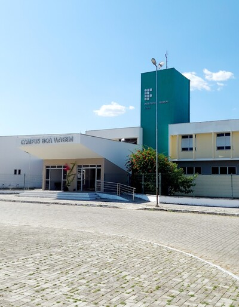

Instituto Federal de Educação, Ciência e Tecnologia do Ceará - Campus Boa Viagem
O IFCE campus Boa Viagem está localizado na mesorregião dos Sertões Cearenses Microrregião, Sertão de Canindé, municípios limítrofes, Norte: Santa Quitéria, Leste: Madalena e Quixeramobim, Sul: Pedra Branca, Oeste: Monsenhor Tabosa, Tamboril e Independência. Distância até a capital, 217 km, Área: 2 836,774 km². Densidade, 18,51 hab/km². Altitude 275 m. Clima, Semiárido. O município de Boa Viagem possui uma população de aproximadamente 53.000 mil habitantes (IBGE, 2010), com Índice de Desenvolvimento da Educação Básica (IDEB) de 5,2, nos primeiros anos da educação fundamental e com índice de Desenvolvimento Humano municipal de 0,598.
Conheça nossa Página Oficial e nossas Redes Sociais:
